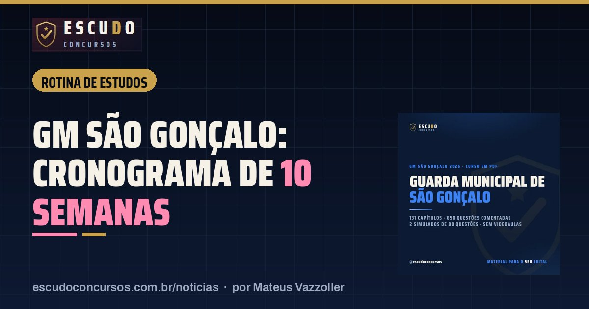

Cronograma de estudos GM São Gonçalo: 10 semanas até a prova de 24/01/2027
Rotina de estudosPublicado em 19 de novembro de 2026 · por Mateus Vazzoller, ESCUDO Concursos

Quem se inscreveu para vestir o uniforme da Guarda Municipal de São Gonçalo como Guarda Municipal Nível II tem agora 10 semanas até a prova objetiva do Instituto SELECON, no domingo, 24/01/2027, de manhã. Pelo edital, as inscrições terminaram em 18/11/2026, e o boleto pode ser pago até hoje, 19/11. Este plano reparte 15 horas por semana pelos pontos de cada disciplina, começa pelas leis da própria Guarda e deixa as três últimas semanas para simulado e revisão.
| Cargo | Guarda Municipal Nível II, Prefeitura de São Gonçalo/RJ |
|---|---|
| Prova objetiva | 24/01/2027, de manhã, 4 horas |
| Tempo até a prova | 10 semanas a partir de 19/11/2026 |
| Carga sugerida | 15 horas por semana |
| Prova | 80 questões de A a D, 100 pontos, mínimo de 50 sem zerar disciplina |
| Prova de Capacidade Física | 27 e 28/02/2027 |
Como dividir 15 horas por semana?
A conta segue os pontos, e não o número de questões. Os Conhecimentos Específicos têm 20 questões que valem 2 pontos cada, somando 40 dos 100 pontos, então ficam com 40% do tempo. As outras quatro disciplinas valem 1 ponto por questão.
| Disciplina | Questões | Pontos | Horas por semana |
|---|---|---|---|
| Conhecimentos Específicos (leis da Guarda) | 20 | 40 | 6h |
| Noções de Direito | 20 | 20 | 3h |
| Legislação Extravagante | 15 | 15 | 2h15 |
| Língua Portuguesa | 15 | 15 | 2h15 |
| Informática | 10 | 10 | 1h30 |
| Total | 80 | 100 | 15h |
Informática fica com o menor horário, mas nunca sai da agenda: zerar qualquer disciplina elimina, mesmo com 50 pontos ou mais no total.
Semana a semana até a prova
Os Específicos vêm primeiro porque são quatro leis, duas delas municipais e uma de 2026, sem questões antigas para treinar. A Lei 1.625/2026, o Estatuto da Guarda de São Gonçalo, ganha duas semanas, e a ordem segue os artigos que o próprio edital cita. Direito e Legislação Extravagante andam juntos, porque várias leis penais aparecem nos dois blocos.
| Semana | Período | Conhecimentos Específicos | Direito e Legislação Extravagante |
|---|---|---|---|
| 1 | 19/11 a 22/11 | Lei 13.022/2014, Estatuto Geral das Guardas Municipais | Constitucional: arts. 1º a 16 e art. 144 |
| 2 | 23/11 a 29/11 | Lei 1.625/2026, parte 1: hierarquia e disciplina (art. 5º, §§ 1º e 2º), arts. 6º e 16 | Penal, parte geral; Lei de Crimes Hediondos e Lei de Tortura |
| 3 | 30/11 a 06/12 | Lei 1.625/2026, parte 2: arts. 141 e 149 e o Anexo IV, com as atribuições do cargo | Penal: crimes contra a pessoa e o patrimônio; Abuso de Autoridade |
| 4 | 07/12 a 13/12 | Lei Municipal 1.416/2022, Estatuto dos Servidores, parte 1 | Processual Penal: inquérito, prisões e Lei 9.099/1995 |
| 5 | 14/12 a 20/12 | Lei Municipal 1.416/2022, parte 2 | Administrativo: atos, poderes, poder de polícia e improbidade |
| 6 | 21/12 a 27/12 | Lei 13.675/2018, SUSP | Maria da Penha, Drogas e Desarmamento; semana do Natal, manter ao menos as questões |
| 7 | 28/12 a 03/01 | Revisão das quatro leis, só por questões | ECA, Crimes Ambientais, Organizações Criminosas e Código de Trânsito |
| 8 | 04/01 a 10/01 | Revisão dos artigos mais errados | Primeiro simulado de 80 questões em 4 horas |
| 9 | 11/01 a 17/01 | Só os blocos em que o simulado foi pior | Segundo simulado no fim de semana |
| 10 | 18/01 a 24/01 | Revisão leve dos resumos e dos erros | Descanso na véspera, 23/01; prova em 24/01 |
Português e Informática entram toda semana, em doses menores: interpretação e gramática um pouco por dia, e um tema de Informática por semana, de hardware e Windows até segurança da informação. Até a semana 5, metade do tempo é teoria e metade é questão. Nas semanas 6 e 7, a proporção vira um terço de teoria e dois terços de questão. Da semana 8 em diante, não entra conteúdo novo.
Como fazer os simulados das semanas 8 e 9?
- Faça as 80 questões de uma vez, de manhã, em 4 horas, para acostumar o corpo ao horário da prova. Dá 3 minutos por questão, já contando o tempo de passar para o cartão.
- Corrija pela régua do edital: pelo menos 50 dos 100 pontos, com cada acerto nos Específicos valendo 2, e nenhuma das cinco disciplinas zerada.
- Some à parte os pontos de Noções de Direito e de Legislação Extravagante: são o primeiro e o segundo critério de desempate.
- Anote o bloco que mais tirou pontos e leve a semana 9 inteira para ele.
O curso ESCUDO para a GM São Gonçalo libera o Simulado 2 em 17/01/2027, no fim da semana 9, para servir de último teste antes da revisão final.
E o treino físico?
A Prova de Capacidade Física está marcada para 27 e 28/02/2027, cinco semanas depois da objetiva, e todos os testes têm tentativa única. Quem espera o resultado da prova escrita para começar chega atrasado. Encaixe três treinos curtos por semana desde já, fora das 15 horas de estudo.
| Teste | Homens | Mulheres |
|---|---|---|
| Abdominal remador em 1 minuto | 30 repetições | 25 repetições |
| Barra fixa | 3 flexões | 10 segundos de isometria |
| Corrida de 100 metros | até 20 segundos | até 22 segundos |
| Corrida de 12 minutos | 2.400 metros | 2.000 metros |
E se eu só tiver 8 horas por semana?
Mantenha a ordem das semanas e corte em proporção: Específicos 3h, Noções de Direito 1h30, Português 1h30, Legislação Extravagante 1h e Informática 1h. Os Específicos continuam com a maior fatia, porque cada questão ali vale o dobro.
Curso ESCUDO Guarda Municipal de São Gonçalo em PDF: 131 capítulos e 650 questões comentadas, 2 simulados de 80 questões, de acordo com o edital. R$ 47.
Ver o curso
Perguntas frequentes
Quando é a prova da Guarda Municipal de São Gonçalo?
A prova objetiva é no domingo, 24/01/2027, de manhã, com 4 horas de duração, em São Gonçalo, Niterói ou Rio de Janeiro, conforme a escolha feita na inscrição.
Qual matéria estudar primeiro para a GM São Gonçalo?
Os Conhecimentos Específicos, que valem 40 dos 100 pontos, começando pela Lei 13.022/2014 e pelo Estatuto da Guarda de São Gonçalo, a Lei 1.625/2026.
Quantos pontos preciso fazer na prova do SELECON?
Pelo menos 50 dos 100 pontos, sem zerar nenhuma disciplina. Depois, só seguem para a prova física os 600 primeiros, mais os empatados na última posição.
Leia também
- Rotina de estudosCronograma de estudos TJSP Escrevente: 16 semanas até a prova de 14/03/2027
20 de novembro de 2026 · Plano de 16 semanas para a prova da Vunesp de 14/03/2027 para Escrevente do TJSP: 15 horas por semana, Direito primeiro e uma redação por semana.
- Rotina de estudosCronograma de estudos Contagem Assistente Administrativo: 10 semanas até a prova de 24/01/2027
18 de novembro de 2026 · Plano de 10 semanas para a prova do IBGP de 24/01/2027 em Contagem/MG: 15 horas por semana pelo peso de cada bloco. Inscrições prorrogadas até 03/12.
- Rotina de estudosCronograma de estudos PM-SC Soldado: 4 semanas até a prova de 13/12/2026
17 de novembro de 2026 · Plano de 4 semanas para a prova da PM-SC de 13/12/2026: horas pelo peso das 60 questões do Instituto AOCP, redação toda semana e simulado de 5 horas.
Guia completo do concurso: edital, vagas e o que cai · Mais notícias e dicas de concursos